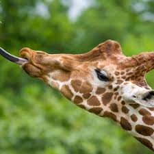

Bears
-
Ollie the Bear
Ollie is a grizzly bear with a love for fishing.

Learn more about Ollie
Ollie is a grizzly bear with a love for fishing.
Frankie is known for his long neck and gentle demeanor.
Coconut can be spotted by her unique coat pattern.
Mella is the coolest cat in the zoo.
Karl's mane is the pride and joy of our zoo.
Cookie is always curious and loves to solve puzzles.
Learn more about CookieEarl is the entertainer of the group with his acrobatics.

Banana Pudding has a sweet tooth and loves meal times.

Wren is our oldest alligator and a favorite among visitors.
Aspen is known for her impressive speed in the water.

Mika is a young alligator learning to navigate her environment.